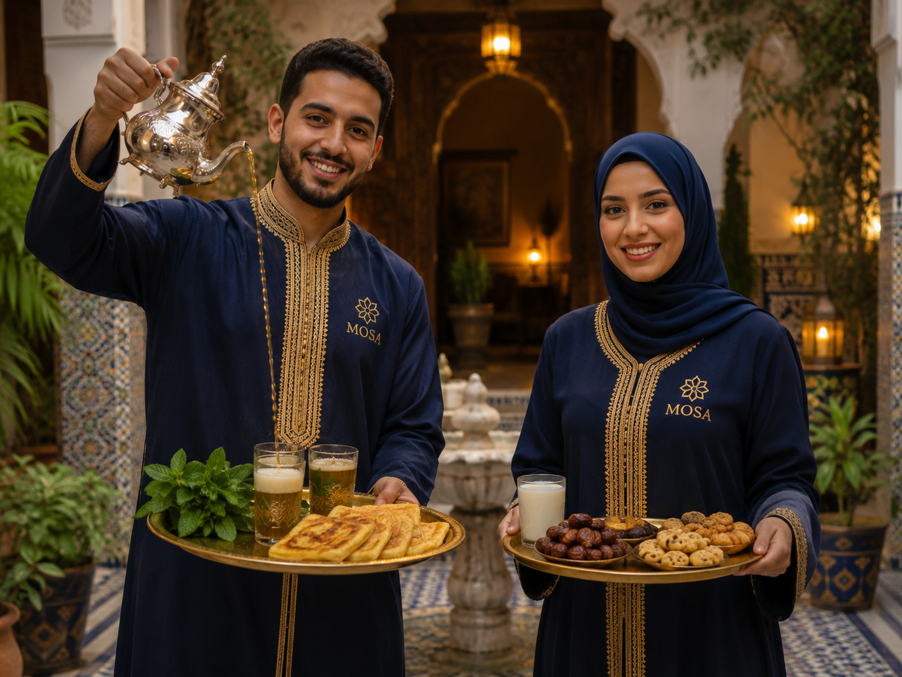

Advies & ondersteuning
Heldere begeleiding, persoonlijke aandacht en begrijpelijke uitleg bij maatschappelijke vragen.
Marokkaans-Nederlandse Organisatie voor Samenwerking & Advies
Wij ondersteunen Marokkaans-Nederlandse burgers, families en organisaties met advies, informatie, samenwerking en maatschappelijke betrokkenheid.

Bruggen bouwen
Vanuit een Marokkaans-Nederlandse identiteit werkt MOSA aan duidelijke informatie, praktische ondersteuning en duurzame samenwerking. We staan dichtbij de gemeenschap en schakelen professioneel met partijen die kansen en maatschappelijke betrokkenheid versterken.
Onze pijlers
Heldere begeleiding, persoonlijke aandacht en begrijpelijke uitleg bij maatschappelijke vragen.
We bouwen bruggen tussen burgers, organisaties en instanties om samen doelen te bereiken.
Informatiebijeenkomsten en activiteiten die betrokkenheid, kennisdeling en gemeenschap versterken.
Waarom MOSA?
MOSA is een vertrouwde schakel voor mensen die informatie zoeken, ondersteuning nodig hebben of willen samenwerken rond maatschappelijke thema's.
Diensten
Praktische ondersteuning en richting bij vragen van burgers en families.
Toegankelijke bijeenkomsten over actuele en relevante maatschappelijke onderwerpen.
Ondersteuning bij afstemming tussen gemeenschap, organisaties en instanties.
Activiteiten
Versterken van gemeenschapsbanden en onderlinge betrokkenheid.
Informatieve sessies met ruimte voor vragen en praktische handvatten.
Aandacht voor opvoeding, ontwikkeling en verbinding tussen generaties.
Lokale initiatieven waarin samenwerking en maatschappelijke impact samenkomen.
Samen verder
Neem contact op met MOSA. Wij denken mee over ondersteuning, samenwerking en deelname aan activiteiten.